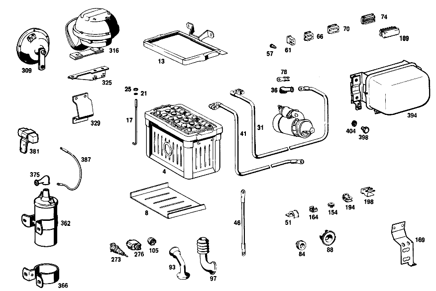

| № | Артикул | Название | Кол. | Примечание | Ограничение |
|---|---|---|---|---|---|
| 4 | A 003 541 33 01 | АКБ | 1 | 12 V/55 AH | |
| 8 | A 110 541 07 35 | ПОЛ | 1 | ||
| 13 | A 108 540 00 23 | MOUNTING FRAME | 1 | ||
| 17 | A 186 541 01 24 | Стяжный болт | 1 | ||
| 21 | A 094 990 68 10 | Пружинное кольцо | 2 | ||
| 25 | N 000934 006013 | Гайка | - | ||
| 25 | N 304032 006008 | Шестигранная гайка | 2 | ||
| 31 | A 108 540 00 30 | ПЛЮС. ПРОВОД | - | ||
| 31 | A 114 540 00 30 | ПЛЮС. ПРОВОД | 1 | ||
| 36 | A 111 546 00 35 | КОЛПАЧОК | - | ||
| 36 | A 116 546 01 35 | Защитный колпачок | 1 | ||
| 41 | A 110 540 06 31 | Электрический провод | 1 | FROM BATTERY TO SIDE MEMBER | |
| 46 | A 110 540 01 31 | ПРОВОД МАССЫ | - | ||
| 46 | A 109 540 01 31 | ПРОВОД МАССЫ | 1 | FROM SIDE MEMBER TO ENGINE | |
| 51 | A 187 995 00 37 | хомут | - | STARTING CABLE AND GROUND CABLES TO FIRE WALL AND TO WHEELHOUSE PANEL [403] НЕ УСТАНОВЛЕНО [402] БОЛЬШЕ НЕ ПОСТАВЛЯЕТСЯ | |
| 57 | A 000 545 47 28 | - Сцепление, механическое | - | ||
| 57 | A 004 545 85 28 | - ШТЕКЕР | - | ||
| 57 | A 008 545 20 28 | - Нижняя часть корпуса | 1 | ОДНОКОНТАКТ.; 1\-PIN | |
| 61 | A 002 545 49 28 | - ШТЕКЕР | - | ||
| 66 | A 004 545 86 28 | - Штекер | - | ||
| 66 | A 007 545 00 28 | - КОРПУС ШТЕК. ГНЕЗДА | - | ||
| 66 | A 015 545 49 28 | - КОРПУС ШТЕК. ГНЕЗДА | 3 | ЧЕТЫРЁХПОЛЮСНЫЙ; 4\-PIN [010] FOR DIRECTION SIGNAL BLINKER SENDER UNIT, INSTRUMENT CLUSTER AND CLOCK | |
| 66 | A 015 545 49 28 | - КОРПУС ШТЕК. ГНЕЗДА | 3 | для WIPER SWITCH, WINDSHIELD WASHER FOOT PUMP, HEATER BLOWER SWITCH; 4\-PIN [011] FOR WIPER SWITCH, WINDSHIELD WASHER FOOT PUMP, HEATER BLOWER SWITCH | |
| 70 | A 005 545 13 28 | - ШТЕКЕР | - | ||
| 70 | A 006 545 80 28 | - CONTACT SUPPORT | 3 | ШЕСТИПОЛЮСНЫЙ; 6\-PIN | |
| 74 | A 002 545 31 28 | - ШТЕКЕР | 2 | 12\-КОНТАКТН. [402] БОЛЬШЕ НЕ ПОСТАВЛЯЕТСЯ | |
| 78 | A 000 546 35 40 | - КАБЕЛЬНЫЙ НАКОНЕЧНИК | 1 | Стартер | |
| 84 | A 111 997 01 81 | - втулка | 1 | ПРОВОД ФАРЫ ЗАДН. ХОДА Рулевое управление: Влево | |
| 88 | A 111 997 13 81 | - резиновая втулка | 1 | Рулевое управление: Влево | |
| 93 | A 110 546 00 85 | - Защитная труба | 1 | ||
| 97 | A 115 546 00 85 | - Защитная труба | 1 | ||
| 105 | A 000 544 04 86 | - ШТЕКЕР | 2 | ФАРА | |
| 117 | A 111 545 00 19 | - ПАТРОН | 1 | Автоматическая коробка переключения передач | |
| 121 | A 111 540 00 50 | - БЛОК ПРЕДОХРАНИТЕЛЕЙ | 1 | ||
| 125 | A 000 545 10 03 | - Крышка | 1 | ||
| 131 | A 000 545 01 80 | - уплотнение | 1 | ||
| 135 | A 000 545 02 80 | - ПРОКЛАДКА УПЛОТНИТЕЛЬНАЯ | 1 | ||
| 141 | A 000 545 20 04 | - Переключатель | 1 | ||
| 145 | A 110 545 11 37 | - Поворотная кнопка | 1 | [402] БОЛЬШЕ НЕ ПОСТАВЛЯЕТСЯ | |
| 149 | A 110 545 02 72 | - Декоративная розетка | 1 | ||
| 154 | A 002 988 01 78 | Скоба | 3 | BACK\-UP LIGHT SWITCH CABLE TO TOEBOARD Рулевое управление: ВлевоКоробка передач | |
| 164 | A 111 988 01 78 | СКОБА | 3 | MAIN CABLE HARNESS TO LEFT WHEEL ARCH PANEL Рулевое управление: Влево | |
| 164 | A 001 988 10 78 | Скоба | - | MAIN CABLE HARNESS TO LEFT WHEEL ARCH PANEL [403] НЕ УСТАНОВЛЕНО | |
| 164 | A 000 988 53 78 | СКОБА | 2 | MAIN CABLE HARNESS TO LEFT WHEEL ARCH PANEL | |
| 164 | A 000 990 22 91 | ГАЙКОДЕРЖАТЕЛЬ | - | ||
| 164 | A 001 990 67 91 | Гайкодержатель | 3 | MAIN CABLE HARNESS AND STARTING CABLE TO FIRE WALL | |
| 169 | A 108 545 02 40 | ДЕРЖАТЕЛЬ | - | ||
| 179 | A 112 540 11 73 | ДЕРЖАТЕЛЬ | 3 | MAIN CABLE HARNESS TO INSTRUMENT PANEL CROSS STRUT OR JACKET TUBE, RESP. Коробка передач | |
| 189 | A 000 545 37 28 | - ШТЕКЕР | 1 | 12\-КОНТАКТН. | |
| 194 | A 002 988 08 78 | Скоба | 2 | ||
| 198 | A 002 988 48 78 | Скоба | 1 | ||
| 206 | A 108 540 02 73 | ДЕРЖАТЕЛЬ | 1 | ЖГУТ ПРОВОДКИ ЗАДН. ФОНАРЕЙ | |
| 210 | A 004 542 98 06 | СПИДОМЕТР | 1 | КИЛОМЕТРОВАЯ ШКАЛА [003] ON SPECIAL REQUEST, 7.00-15 TIRES | |
| 216 | A 002 545 74 28 | - КОРПУС ШТЕК. ГНЕЗДА | 1 | 12\-КОНТАКТН. | |
| 221 | A 001 542 07 02 | МАНОМЕТР МАСЛА | 1 | GRADUATION IN KG/CM2 | |
| 226 | A 002 542 15 05 | ТЕЛЕТЕРМОМЕТР | 1 | CENTIGRADE SCALE;CAPILLARY TUBE LENGHT: 1550 MM | |
| 231 | A 000 542 95 03 | ИЗМЕРИТЕЛЬ ТОПЛИВА | 1 | ||
| 235 | A 000 542 03 25 | ВЫКЛЮЧАТЕЛЬ РЕГУЛИРОВОЧН. | 1 | ||
| 240 | A 000 997 24 81 | Проходная втулка | 1 | КОМБИНАЦИЯ ПРИБОРОВ | |
| 244 | N 000315 008000 | Гайка | 1 | КОМБИНАЦИЯ ПРИБОРОВ | |
| 249 | A 121 540 01 59 | ШЛАНГ | 1 | OIL PRESSURE GAUGE LINE | |
| 254 | A 110 540 02 60 | ЭЛ. ПРОВОД | 1 | МАНОМЕТР МАСЛА Рулевое управление: Влево | |
| 259 | A 111 997 05 81 | резиновая втулка | 1 | Рулевое управление: Влево | |
| 263 | A 111 542 04 11 | ЧАСЫ | 1 | ||
| 268 | A 110 542 01 38 | ПОДКЛАДКА | 1 | ||
| 273 | A 000 545 15 25 | РОЗЕТКА | - | ЛАМПА РУЧНАЯ [402] БОЛЬШЕ НЕ ПОСТАВЛЯЕТСЯ [403] НЕ УСТАНОВЛЕНО | |
| 276 | A 001 545 02 11 | Переключатель | 1 | КОНТРОЛЬ РУЧН. ТОРМОЗА | |
| 280 | A 000 545 35 09 | Переключатель | 1 | СТОП\-СИГНАЛ | |
| 283 | N 006797 012251 | Зубчатая шайба | 1 | ||
| 288 | A 000 990 92 51 | гайка | 1 | ||
| 296 | A 110 542 12 07 | ВАЛ ГИБКИЙ | 1 | 1250 MM Рулевое управление: ВлевоКоробка передач | |
| 304 | A 108 997 03 81 | резиновая втулка | 1 | FLEXIBLE SHAFT THRU FIRE WALL Рулевое управление: Влево | |
| 309 | A 001 542 38 20 | ЗВУКОВОЙ СИГНАЛ | - | ||
| 316 | A 001 542 54 20 | ЗВУКОВОЙ СИГНАЛ | - | НИЗК. ЧАСТ. HELLA [403] НЕ УСТАНОВЛЕНО [007] ON SPECIAL REQUEST,DOUBLE TONE HORN | |
| 325 | A 110 540 08 73 | ДЕРЖАТЕЛЬ | - | ЗВУКОВЫЕ СИГНАЛЫ [403] НЕ УСТАНОВЛЕНО [007] ON SPECIAL REQUEST,DOUBLE TONE HORN | |
| 329 | A 110 542 07 40 | ДЕРЖАТЕЛЬ | - | ЗВУКОВЫЕ СИГНАЛЫ [403] НЕ УСТАНОВЛЕНО [007] ON SPECIAL REQUEST,DOUBLE TONE HORN | |
| 335 | A 000 545 56 11 | ВЫКЛЮЧАТЕЛЬ | - | ||
| 335 | A 001 545 00 11 | ВЫКЛЮЧАТЕЛЬ | - | [403] НЕ УСТАНОВЛЕНО [007] ON SPECIAL REQUEST,DOUBLE TONE HORN [415] ПРИМЕЧ. ПО ЗАМЕНЕ ПРИМЕНИМО ТОЛЬКО ДЛЯ СТОЯЩИХ РЯДОМ ПОЗИЦИЙ | |
| 339 | A 110 540 09 83 | РУЧКА | - | [403] НЕ УСТАНОВЛЕНО [007] ON SPECIAL REQUEST,DOUBLE TONE HORN | |
| 344 | A 111 545 03 40 | ДЕРЖАТЕЛЬ | - | [403] НЕ УСТАНОВЛЕНО [007] ON SPECIAL REQUEST,DOUBLE TONE HORN | |
| 348 | N 072586 001200 | Соединитель проводов | - | 3\-КОНТАКТ. [403] НЕ УСТАНОВЛЕНО [007] ON SPECIAL REQUEST,DOUBLE TONE HORN | |
| 362 | A 000 158 07 03 | Катушка зажигания | 1 | ||
| 366 | A 000 158 02 40 | - ДЕРЖАТЕЛЬ | 1 | [402] БОЛЬШЕ НЕ ПОСТАВЛЯЕТСЯ | |
| 375 | A 000 546 33 35 | Защитный колпачок | 2 | ||
| 381 | A 000 158 08 45 | Дополнительный резистор | 1 | [402] БОЛЬШЕ НЕ ПОСТАВЛЯЕТСЯ | |
| 387 | A 108 546 00 03 | Электрический провод | 1 | ||
| 394 | A 002 154 36 06 | Регулятор-выключатель | - | ||
| 394 | A 002 154 74 06 | Регулятор-выключатель | 1 | ||
| 398 | N 000933 006122 | Винт | - | ||
| 398 | N 304017 006034 | Винт с 6-гранной головкой | 2 | REGULATOR AND CUT\-OUT TO WHEEL ARCH PANEL | |
| 404 | A 094 990 68 10 | Пружинное кольцо | 2 | REGULATOR AND CUT\-OUT TO WHEEL ARCH PANEL | |
| A 000 541 90 01 | АКБ | - | |||
| A 000 989 05 15 | КОМПЛ. КИСЛОТЫ АККУМУЛ. | - | |||
| A 000 989 13 15 | Электролит | 1 | [021] TO 000 541 82 01 | ||
| A 002 541 99 01 | аккумуляторная батарея | 1 | 12V/70AH [001] ON SPECIAL REQUEST, 66-AH BATTERY | ||
| A 000 989 04 15 | КОМПЛ. КИСЛОТЫ АККУМУЛ. | - | |||
| A 000 989 13 15 | Электролит | 1 | [022] TO 000 541 74 01 | ||
| A 110 541 01 35 | ПОЛ | 1 | [001] ON SPECIAL REQUEST, 66-AH BATTERY | ||
| A 111 540 00 23 | РАМА КРЕПЛЕНИЯ | 1 | Коробка передач [001] ON SPECIAL REQUEST, 66-AH BATTERY | ||
| A 110 540 08 23 | MOUNTING FRAME | 1 | [001] ON SPECIAL REQUEST, 66-AH BATTERY | ||
| A 120 541 01 24 | БОЛТ НАТЯЖНОЙ | 1 | |||
| A 111 540 00 31 | ПРОВОД МАССЫ | - | FROM BATTERY TO ENGINE Рулевое управление: ВправоАвтоматическая коробка переключения передач [403] НЕ УСТАНОВЛЕНО | ||
| A 121 540 01 41 | ГИБКАЯ ПЕРЕМЫЧКА | - | FROM ENGINE TO FIRE WALL Рулевое управление: ВправоАвтоматическая коробка переключения передач [403] НЕ УСТАНОВЛЕНО | ||
| A 120 420 02 27 | Т-образный винт | - | ПРОВОД МАССЫ НА ПЕРЕГОРОДКЕ Рулевое управление: ВправоАвтоматическая коробка переключения передач [403] НЕ УСТАНОВЛЕНО | ||
| A 094 990 68 10 | Пружинное кольцо | - | ПРОВОД МАССЫ НА ПЕРЕГОРОДКЕ Рулевое управление: ВправоАвтоматическая коробка переключения передач [403] НЕ УСТАНОВЛЕНО | ||
| N 000934 006007 | Гайка | - | ПРОВОД МАССЫ НА ПЕРЕГОРОДКЕ Рулевое управление: ВправоАвтоматическая коробка переключения передач [403] НЕ УСТАНОВЛЕНО | ||
| N 000933 008131 | Винт | - | |||
| N 304017 008016 | Винт с 6-гранной головкой | 2 | NEGATIVE CABLE TO SIDE MEMBER AND TO FIRE WALL; M8X16 | ||
| N 000127 008203 | Пружинное кольцо | 2 | NEGATIVE CABLE TO SIDE MEMBER AND TO FIRE WALL | ||
| N 000934 008010 | Гайка | - | |||
| N 304032 008006 | Шестигранная гайка | 1 | NEGATIVE CABLE TO SIDE MEMBER AND TO FIRE WALL; M8 | ||
| A 000 990 86 91 | ГАЙКОДЕРЖАТЕЛЬ | 1 | NEGATIVE CABLE TO SIDE MEMBER AND TO FIRE WALL Рулевое управление: ВправоАвтоматическая коробка переключения передач | ||
| N 007981 004233 | Шуруп | - | |||
| N 000000 000460 | Шуруп | - | STARTING CABLE AND GROUND CABLES TO FIRE WALL AND TO WHEELHOUSE PANEL; 4.8X13 [403] НЕ УСТАНОВЛЕНО | ||
| A 000 546 29 30 | ИЗОЛИРУЮЩИЙ ШЛАНГ | - | [402] БОЛЬШЕ НЕ ПОСТАВЛЯЕТСЯ | ||
| A 180 997 15 82 | ШЛАНГ | 2 | Рулевое управление: Вправо | ||
| A 180 540 04 41 | Плоский провод массы | 1 | КАПОТ К ПЕРЕДН.ЧАСТИ [002] ON SPECIAL REQUEST, LONG RANGE INTERFERENCE SUPPRESSION FOR VEHICLES EXPORTED TO FRANCE | ||
| N 007981 004258 | Шуруп | 1 | ЛЕНТОЧНЫЙ ПРОВОД "МАССЫ" К ПЕРЕДНЕЙ ЧАСТИ КУЗОВА; 4.8X16 [002] ON SPECIAL REQUEST, LONG RANGE INTERFERENCE SUPPRESSION FOR VEHICLES EXPORTED TO FRANCE | ||
| N 009021 005202 | Шайба | - | |||
| N 009021 005205 | Шайба | 1 | ЛЕНТОЧНЫЙ ПРОВОД "МАССЫ" К ПЕРЕДНЕЙ ЧАСТИ КУЗОВА [002] ON SPECIAL REQUEST, LONG RANGE INTERFERENCE SUPPRESSION FOR VEHICLES EXPORTED TO FRANCE | ||
| A 111 540 00 41 | ГИБКАЯ ПЕРЕМЫЧКА | - | |||
| A 000 546 07 20 | ГИБКАЯ ПЕРЕМЫЧКА | 1 | ДВИГ. К РАДИАТОРУ [002] ON SPECIAL REQUEST, LONG RANGE INTERFERENCE SUPPRESSION FOR VEHICLES EXPORTED TO FRANCE | ||
| A 111 540 97 05 | ЖГУТ ЭЛ.-ПРОВОДКИ | 1 | Рулевое управление: ВлевоКоробка передач | ||
| A 111 540 98 05 | ЖГУТ ЭЛ.-ПРОВОДКИ | 1 | Рулевое управление: ВлевоАвтоматическая коробка переключения передач | ||
| A 111 540 99 05 | ЖГУТ ЭЛ.-ПРОВОДКИ | 1 | Рулевое управление: ВправоКоробка передач | ||
| A 111 540 00 06 | ЖГУТ ЭЛ.-ПРОВОДКИ | 1 | Рулевое управление: ВправоАвтоматическая коробка переключения передач | ||
| A 008 545 37 28 | - Сцепление, механическое | 5 | ВЫКЛ.СТОП\-СИГНАЛОВ,2\-КОНТАКТ.; 2\-PIN [008] FOR STOP LIGHT SWITCH, BACK-UP LIGHT SWITCH, CIGAR LIGHTER, HAND BRAKE CONTROL AND CHOKE CONTROL | ||
| A 008 545 37 28 | - Сцепление, механическое | 2 | для IGNITION SWITCH AND KICK\-DOWN SWITCH; 2\-PIN Автоматическая коробка переключения передач [009] FOR IGNITION SWITCH AND KICK-DOWN SWITCH | ||
| A 000 546 49 40 | - КАБЕЛЬНЫЙ НАКОНЕЧНИК | 1 | ПРОВОД НА ГЕНЕРАТОРЕ | ||
| A 111 997 06 81 | - КАБ. ВТУЛКА | 1 | Рулевое управление: Вправо | ||
| A 111 997 15 81 | - резиновая втулка | 1 | Рулевое управление: Вправо | ||
| A 111 997 05 81 | - резиновая втулка | 1 | Рулевое управление: Вправо | ||
| A 002 545 95 28 | - Корпус штекерной втулки | 1 | РЕГУЛИРУЮЩИЙ ВЫКЛЮЧАТЕЛЬ ГЕНЕРАТОРА | ||
| A 000 546 40 40 | - КАБЕЛЬНЫЙ НАКОНЕЧНИК | 3 | РЕГУЛИРУЮЩИЙ ВЫКЛЮЧАТЕЛЬ ГЕНЕРАТОРА | ||
| A 000 546 46 40 | - КАБЕЛЬНЫЙ НАКОНЕЧНИК | 3 | РЕГУЛИРУЮЩИЙ ВЫКЛЮЧАТЕЛЬ ГЕНЕРАТОРА | ||
| A 000 546 43 40 | - ПЛОСКИЙ ШТЕКЕР | 2 | для STARTING DEVICE; 1\-2.5 MM2 | ||
| A 000 546 45 40 | - ШТЕК. ГНЕЗДО | 1 | для STARTING DEVICE | ||
| A 000 546 47 40 | - КАБЕЛЬНЫЙ НАКОНЕЧНИК | - | |||
| A 000 546 46 40 | - КАБЕЛЬНЫЙ НАКОНЕЧНИК | 1 | для STARTING DEVICE | ||
| A 000 546 08 45 | - Изоляционная втулка | 1 | |||
| A 000 546 01 45 | - Изоляционная втулка | 1 | |||
| A 000 545 26 04 | - ВЫКЛЮЧАТЕЛЬ | 1 | |||
| N 000085 004100 | - Винт | 10 | |||
| N 006797 004230 | - Зубчатая шайба | 10 | |||
| A 000 545 83 34 | предохранитель | 10 | БЛОК ПРЕДОХРАНИТЕЛЕЙ | ||
| N 072581 025100 | ПРЕДОХРАНИТЕЛЬ | 1 | БЛОК ПРЕДОХРАНИТЕЛЕЙ | ||
| N 007985 004136 | Винт | 2 | ГНЕЗДО ПРЕДОХР. НА МОТОР.ЩИТЕ; M4X12 | ||
| N 000137 004202 | Пружинная шайба | 2 | ГНЕЗДО ПРЕДОХР. НА МОТОР.ЩИТЕ | ||
| A 000 987 32 72 | ЗАЩИТА КРОМОК | - | |||
| A 002 987 35 72 | ЗАЩИТА КРОМОК | 1 | 60mm | ||
| A 001 987 22 72 | Защита кромок | 1 | 60mm [404] ЗАКАЗЫВАТЬ ПОГОННЫМИ МЕТРАМИ | ||
| A 136 995 00 37 | хомут | 2 | Рулевое управление: Влево | ||
| A 136 995 00 37 | хомут | 1 | Рулевое управление: Вправо | ||
| A 136 995 01 37 | хомут | 2 | MAIN CABLE HARNESS AND STARTING CABLE TO FIRE WALL Рулевое управление: Влево | ||
| A 186 995 02 42 | ХОМУТ | 1 | MAIN CABLE HARNESS AND STARTING CABLE TO FIRE WALL Рулевое управление: ВправоАвтоматическая коробка переключения передач | ||
| A 187 995 00 37 | хомут | 3 | MAIN CABLE HARNESS AND STARTING CABLE TO FIRE WALL Рулевое управление: Вправо [402] БОЛЬШЕ НЕ ПОСТАВЛЯЕТСЯ | ||
| A 180 995 00 42 | ХОМУТ | - | Рулевое управление: ВправоАвтоматическая коробка переключения передач | ||
| A 123 995 02 22 | хомут | 2 | MAIN CABLE HARNESS AND STARTING CABLE TO FIRE WALL Рулевое управление: ВправоАвтоматическая коробка переключения передач | ||
| A 108 546 00 53 | РАСПОРН. ТРУБКА | - | MAIN CABLE HARNESS AND STARTING CABLE TO FIRE WALL [402] БОЛЬШЕ НЕ ПОСТАВЛЯЕТСЯ | ||
| N 007976 004211 | Шуруп | 4 | MAIN CABLE HARNESS AND STARTING CABLE TO FIRE WALL; 4,8X25 Рулевое управление: Влево | ||
| N 007976 004211 | Шуруп | 3 | 4,8X25 Рулевое управление: Вправо | ||
| N 007985 006131 | Винт | 3 | MAIN CABLE HARNESS AND STARTING CABLE TO FIRE WALL | ||
| N 007981 004233 | Шуруп | - | Рулевое управление: Вправо | ||
| N 000000 000460 | Шуруп | 1 | MAIN CABLE HARNESS AND STARTING CABLE TO FIRE WALL; 4.8X13 Рулевое управление: Вправо | ||
| A 094 990 68 10 | Пружинное кольцо | 3 | MAIN CABLE HARNESS AND STARTING CABLE TO FIRE WALL | ||
| A 000 990 27 91 | ГАЙКОДЕРЖАТЕЛЬ | - | |||
| A 187 995 00 37 | хомут | 1 | ПРОВОД СТАРТЕРА НА РАМКЕ АККУМУЛЯТОРНОЙ БАТАРЕИ [402] БОЛЬШЕ НЕ ПОСТАВЛЯЕТСЯ | ||
| N 007976 004205 | Шуруп | 1 | ПРОВОД СТАРТЕРА НА РАМКЕ АККУМУЛЯТОРНОЙ БАТАРЕИ | ||
| A 000 997 07 81 | Соед. муфта для шлангов | 1 | ПРОВОД СТАРТЕРА НА РАМКЕ АККУМУЛЯТОРНОЙ БАТАРЕИ [403] НЕ УСТАНОВЛЕНО | ||
| A 108 540 04 73 | ДЕРЖАТЕЛЬ | 1 | |||
| N 007976 004205 | Шуруп | 2 | COUPLER TO INSTRUMENT PANEL BRACE | ||
| N 009021 005202 | Шайба | - | |||
| N 009021 005205 | Шайба | 2 | COUPLER TO INSTRUMENT PANEL BRACE | ||
| A 136 995 01 37 | хомут | 1 | MAIN CABLE HARNESS TO LEFT INSIDE FRONT PANEL PILLAR | ||
| N 007976 004205 | Шуруп | 1 | MAIN CABLE HARNESS TO LEFT INSIDE FRONT PANEL PILLAR | ||
| N 040621 014200 | Изоляционный шланг | 1 | 85 MM [404] ЗАКАЗЫВАТЬ ПОГОННЫМИ МЕТРАМИ | ||
| A 002 988 02 78 | Скоба | 2 | MAIN CABLE HARNESS TO AUTOMATIC TRANSMISSION Рулевое управление: ВлевоАвтоматическая коробка переключения передач | ||
| A 001 988 21 78 | СКОБА | - | MAIN CABLE HARNESS TO INSTRUMENT PANEL BRACE Рулевое управление: Вправо [403] НЕ УСТАНОВЛЕНО | ||
| A 110 988 04 78 | СКОБА | - | MAIN CABLE HARNESS TO INSTRUMENT PANEL BRACE Рулевое управление: Влево [403] НЕ УСТАНОВЛЕНО | ||
| A 000 988 34 78 | Скоба | 5 | ГЛ. ЖГУТ ПРОВОДКИ | ||
| A 000 997 28 81 | Проходная втулка | 1 | |||
| A 000 988 33 78 | Скоба | 5 | для MAIN CABLE HARNESS AND CABLE HARNESS TO CROSS MEMBER | ||
| A 000 988 53 78 | СКОБА | 2 | ГЛАВН.ЖГУТ ПРОВОДКИ НА ПЕДАЛЬН.УЗЛЕ Рулевое управление: Вправо | ||
| A 112 545 05 40 | ДЕРЖАТЕЛЬ | 1 | MAIN CABLE HARNESS TO GENERATOR REGULATOR Рулевое управление: ВправоАвтоматическая коробка переключения передач | ||
| A 000 997 29 81 | Проходная втулка | 1 | MAIN CABLE HARNESS TO GENERATOR REGULATOR Рулевое управление: ВправоАвтоматическая коробка переключения передач | ||
| A 111 997 15 81 | резиновая втулка | 1 | CABLE FROM DOUBLE SOLENOID THROUGH FRONT PANEL Рулевое управление: ВправоАвтоматическая коробка переключения передач | ||
| N 040621 014200 | - Изоляционный шланг | 3 | MAIN CABLE HARNESS TO INSTRUMENT PANEL BRACE 85 MM Коробка передач [404] ЗАКАЗЫВАТЬ ПОГОННЫМИ МЕТРАМИ | ||
| N 007976 004205 | Шуруп | 3 | MAIN CABLE HARNESS TO INSTRUMENT PANEL CROSS STRUT OR JACKET TUBE, RESP. Рулевое управление: Влево | ||
| N 007976 004205 | Шуруп | 5 | MAIN CABLE HARNESS TO INSTRUMENT PANEL CROSS STRUT OR JACKET TUBE, RESP. Рулевое управление: Вправо | ||
| N 007981 004233 | Шуруп | - | Рулевое управление: ВправоАвтоматическая коробка переключения передач | ||
| N 000000 000460 | Шуруп | 1 | MAIN CABLE HARNESS TO INSTRUMENT PANEL CROSS STRUT OR JACKET TUBE, RESP.; 4.8X13 Рулевое управление: ВправоАвтоматическая коробка переключения передач | ||
| A 312 995 14 01 | хомут | 1 | ELECTRIC CABLE TO CARBURETOR Автоматическая коробка переключения передач | ||
| A 001 997 41 90 | Кабельная стяжка | 1 | IDLING SWITCH CABLE HARNESS TO WATER PIPE; 7X100 MM Автоматическая коробка переключения передач | ||
| N 007981 002241 | Шуруп | 2 | COUPLER TO TAIL LAMP CABLE HARNESS | ||
| N 000933 004016 | БОЛТ | 6 | СОЕДИНЕНИЕ "МАССЫ" | ||
| N 000127 004203 | Пружинное кольцо | - | |||
| N 912004 004102 | Пружинное кольцо | 6 | СОЕДИНЕНИЕ "МАССЫ" | ||
| N 000934 004006 | Гайка | 6 | СОЕДИНЕНИЕ "МАССЫ" | ||
| N 000933 006102 | Винт | - | |||
| N 304017 006016 | Винт с 6-гранной головкой | 1 | GROUND CABLE TO THE INSIDE OF COWL; M6X16 | ||
| A 094 990 68 10 | Пружинное кольцо | 1 | GROUND CABLE TO THE INSIDE OF COWL | ||
| N 000934 006007 | Гайка | 1 | GROUND CABLE TO THE INSIDE OF COWL | ||
| A 004 545 86 28 | - Штекер | - | |||
| A 007 545 00 28 | - КОРПУС ШТЕК. ГНЕЗДА | - | |||
| A 015 545 49 28 | - КОРПУС ШТЕК. ГНЕЗДА | 1 | ЧЕТЫРЁХПОЛЮСНЫЙ; 4\-PIN [403] НЕ УСТАНОВЛЕНО | ||
| A 110 540 01 07 | - ЖГУТ ЭЛ.-ПРОВОДКИ | 1 | |||
| A 110 540 03 07 | - ЖГУТ ЭЛ.-ПРОВОДКИ | 1 | |||
| A 005 545 13 28 | - ШТЕКЕР | - | |||
| A 006 545 80 28 | - CONTACT SUPPORT | 2 | ШЕСТИПОЛЮСНЫЙ; 6\-PIN | ||
| A 002 545 49 28 | - ШТЕКЕР | - | |||
| A 008 545 37 28 | - Сцепление, механическое | 1 | ДВУХПОЛЮСНЫЙ; 2\-PIN | ||
| A 111 997 15 81 | - резиновая втулка | 1 | |||
| A 000 988 34 78 | Скоба | 2 | TAIL LAMP CABLE HARNESS TO STIFFENING PLATE | ||
| A 000 546 33 35 | Защитный колпачок | 2 | ЖГУТ ПРОВОДКИ НА ГЕНЕРАТОРЕ | ||
| A 000 997 28 81 | Проходная втулка | 1 | ЖГУТ ПРОВОДКИ НА ГЕНЕРАТОРЕ | ||
| N 040621 014200 | - Изоляционный шланг | 1 | 85 MM [404] ЗАКАЗЫВАТЬ ПОГОННЫМИ МЕТРАМИ | ||
| N 007976 004205 | Шуруп | 1 | |||
| A 000 997 24 90 | СОЕДИНИТЕЛЬНЫЙ ЭЛЕМЕНТ | - | |||
| A 001 997 43 90 | Кабельная стяжка | 1 | 9X250 MM | ||
| A 000 988 17 78 | СКОБА | 4 | |||
| A 000 988 33 78 | Скоба | 5 | |||
| A 187 995 00 37 | хомут | 1 | [402] БОЛЬШЕ НЕ ПОСТАВЛЯЕТСЯ | ||
| N 007981 003214 | Шуруп | 1 | B3,9X9,5 | ||
| A 004 542 96 06 | СПИДОМЕТР | 1 | КИЛОМЕТРОВАЯ ШКАЛА | ||
| A 004 542 97 06 | СПИДОМЕТР | 1 | ГРАДУИРОВКА В МИЛЯХ | ||
| A 004 542 99 06 | СПИДОМЕТР | 1 | ГРАДУИРОВКА В МИЛЯХ [003] ON SPECIAL REQUEST, 7.00-15 TIRES | ||
| A 001 542 08 02 | МАНОМЕТР МАСЛА | 1 | READING IN LB./SQ. IN. | ||
| A 002 542 41 05 | ТЕЛЕТЕРМОМЕТР | 1 | GRADUATION IN DEGS. F.; LENGTH OF CAPILLARY TUBE: 1550 MM | ||
| N 000084 003100 | Винт | 3 | OIL PRESSURE GAUGE AND COOLING WATER TEMPERATURE GAUGE | ||
| N 000084 003101 | Винт | 2 | ДАТЧИК УРОВНЯ ТОПЛИВА | ||
| N 000084 003122 | Винт | 2 | РЕГУЛИР. ВЫКЛ\-ТЕЛЬ | ||
| N 072601 012800 | Лампа накаливания | 10 | КОМБИНАЦИЯ ПРИБОРОВ; 12V/2W Коробка передач | ||
| N 072601 012800 | Лампа накаливания | 11 | 12V/2W Автоматическая коробка переключения передач | ||
| N 009021 008205 | Шайба | - | |||
| N 009021 008213 | Шайба | 1 | КОМБИНАЦИЯ ПРИБОРОВ; 8 MM | ||
| N 000000 003250 | Шайба | 1 | КОМБИНАЦИЯ ПРИБОРОВ | ||
| A 120 993 02 25 | пружина | 2 | CAPILLARY TUBE TO RETURN LINE Рулевое управление: Вправо [402] БОЛЬШЕ НЕ ПОСТАВЛЯЕТСЯ | ||
| A 111 997 14 81 | резиновая втулка | 1 | CAPILLARY TUBE AND CHOKE CABLE THRU FIRE WALL | ||
| A 110 540 03 60 | ЭЛ. ПРОВОД | 1 | МАНОМЕТР МАСЛА Рулевое управление: Вправо | ||
| A 108 540 04 59 | ШЛАНГ | 1 | |||
| A 108 540 05 59 | ШЛАНГ | 1 | |||
| A 110 997 16 81 | - КАБ. ВТУЛКА | 1 | Рулевое управление: Вправо | ||
| A 111 540 05 73 | ДЕРЖАТЕЛЬ | 1 | OIL PRESSURE GAUGE LINE Рулевое управление: Влево | ||
| A 111 540 06 78 | ВЫКЛЮЧАТЕЛЬ СТАРТЕРА | 1 | Рулевое управление: Вправо | ||
| A 000 988 18 78 | - Скоба | 1 | Рулевое управление: Влево | ||
| N 000137 008204 | Пружинная шайба | - | |||
| N 000137 008212 | Пружинная шайба | 1 | OIL PRESSURE GAUGE LINE AND HOSE TO BRACKET | ||
| N 000439 008211 | Гайка | - | |||
| N 304035 008001 | Шестигранная гайка | 1 | OIL PRESSURE GAUGE LINE AND HOSE TO BRACKET; M8 | ||
| A 000 990 96 90 | ВТУЛКА | 2 | Рулевое управление: Вправо | ||
| N 072601 012800 | - Лампа накаливания | 1 | 12V/2W | ||
| A 000 542 06 23 | ЗУММЕР | 1 | УКАЗАТЕЛЬ ПОВОРОТА Рулевое управление: Вправо [402] БОЛЬШЕ НЕ ПОСТАВЛЯЕТСЯ [004] ON SPECIAL REQUEST,FOR VEHICLES EXPORTED TO AUSTRALIA | ||
| A 110 540 02 09 | ЖГУТ ЭЛ.-ПРОВОДКИ | 1 | ЗУММЕР Рулевое управление: Вправо [004] ON SPECIAL REQUEST,FOR VEHICLES EXPORTED TO AUSTRALIA | ||
| A 000 542 59 19 | Контактор | 1 | [005] ON SPECIAL REQUEST, BLINKER LIGHT SIGNAL SYSTEM FOR VEHICLES EXPORTED TO ITALY AND TO FRANCE | ||
| A 110 542 21 09 | КОМПЕНСАТОР ПРОЙД. ПУТИ | 1 | Рулевое управление: Влево [005] ON SPECIAL REQUEST, BLINKER LIGHT SIGNAL SYSTEM FOR VEHICLES EXPORTED TO ITALY AND TO FRANCE | ||
| A 005 545 13 28 | - ШТЕКЕР | - | Рулевое управление: Влево | ||
| A 006 545 80 28 | - CONTACT SUPPORT | 1 | ШЕСТИПОЛЮСНЫЙ; 6\-PIN Рулевое управление: Влево [005] ON SPECIAL REQUEST, BLINKER LIGHT SIGNAL SYSTEM FOR VEHICLES EXPORTED TO ITALY AND TO FRANCE | ||
| N 072586 001200 | Соединитель проводов | 1 | [005] ON SPECIAL REQUEST, BLINKER LIGHT SIGNAL SYSTEM FOR VEHICLES EXPORTED TO ITALY AND TO FRANCE | ||
| N 007985 004159 | Винт | 2 | РЕЛЕ [005] ON SPECIAL REQUEST, BLINKER LIGHT SIGNAL SYSTEM FOR VEHICLES EXPORTED TO ITALY AND TO FRANCE | ||
| N 912004 004102 | Пружинное кольцо | 2 | РЕЛЕ [005] ON SPECIAL REQUEST, BLINKER LIGHT SIGNAL SYSTEM FOR VEHICLES EXPORTED TO ITALY AND TO FRANCE | ||
| N 000934 004006 | Гайка | 2 | РЕЛЕ [005] ON SPECIAL REQUEST, BLINKER LIGHT SIGNAL SYSTEM FOR VEHICLES EXPORTED TO ITALY AND TO FRANCE | ||
| A 110 997 12 81 | резиновая втулка | 1 | CABLE HARNESS THRU FIRE WALL [005] ON SPECIAL REQUEST, BLINKER LIGHT SIGNAL SYSTEM FOR VEHICLES EXPORTED TO ITALY AND TO FRANCE | ||
| A 110 626 19 14 | ДЕРЖАТЕЛЬ | 1 | Рулевое управление: Влево [005] ON SPECIAL REQUEST, BLINKER LIGHT SIGNAL SYSTEM FOR VEHICLES EXPORTED TO ITALY AND TO FRANCE | ||
| N 007976 004205 | Шуруп | 2 | Рулевое управление: Влево [005] ON SPECIAL REQUEST, BLINKER LIGHT SIGNAL SYSTEM FOR VEHICLES EXPORTED TO ITALY AND TO FRANCE | ||
| A 110 540 23 09 | ЖГУТ ЭЛ.-ПРОВОДКИ | 1 | Рулевое управление: Влево [006] ON SPECIAL REQUEST, FOGLAMP WIRING FOR VEHICLES EXPORTED TO FRANCE | ||
| A 000 545 99 01 | Закр. блок предохр. | 1 | ДВУХПОЛЮСНЫЙ [006] ON SPECIAL REQUEST, FOGLAMP WIRING FOR VEHICLES EXPORTED TO FRANCE | ||
| A 110 542 16 40 | ДЕРЖАТЕЛЬ | 1 | [006] ON SPECIAL REQUEST, FOGLAMP WIRING FOR VEHICLES EXPORTED TO FRANCE | ||
| N 007985 004136 | Винт | 2 | M4X12 [006] ON SPECIAL REQUEST, FOGLAMP WIRING FOR VEHICLES EXPORTED TO FRANCE | ||
| N 000127 004203 | Пружинное кольцо | - | |||
| N 912004 004102 | Пружинное кольцо | 2 | [006] ON SPECIAL REQUEST, FOGLAMP WIRING FOR VEHICLES EXPORTED TO FRANCE | ||
| N 000934 004006 | Гайка | 2 | [006] ON SPECIAL REQUEST, FOGLAMP WIRING FOR VEHICLES EXPORTED TO FRANCE | ||
| A 110 542 08 07 | ВАЛ ГИБКИЙ | 1 | 1250 MM Рулевое управление: ВлевоАвтоматическая коробка переключения передач | ||
| A 110 542 11 07 | ВАЛ ГИБКИЙ | 1 | 1980 MM Рулевое управление: ВправоКоробка передач | ||
| A 110 542 09 07 | ВАЛ ГИБКИЙ | 1 | 1700 MM Рулевое управление: ВправоАвтоматическая коробка переключения передач | ||
| A 000 988 18 78 | Скоба | 1 | ВАЛ ГИБКИЙ | ||
| A 000 988 33 78 | Скоба | 1 | ВАЛ ГИБКИЙ Рулевое управление: ВлевоАвтоматическая коробка переключения передач | ||
| A 110 988 08 78 | СКОБА | 1 | ВАЛ ГИБКИЙ Рулевое управление: Вправо | ||
| A 108 542 02 40 | ДЕРЖАТЕЛЬ | 1 | FLEXIBLE SHAFT TO BELL HOUSING Рулевое управление: Влево | ||
| A 110 997 03 81 | КАБ. ВТУЛКА | 1 | FLEXIBLE SHAFT THRU FIRE WALL Рулевое управление: Влево | ||
| A 136 997 00 81 | КАБ. ВТУЛКА | - | Рулевое управление: Вправо | ||
| A 183 997 00 81 | втулка | 1 | FLEXIBLE SHAFT THRU FIRE WALL Рулевое управление: Вправо | ||
| A 002 542 00 20 | ЗВУКОВОЙ СИГНАЛ | - | |||
| A 003 542 19 20 | Звуковой сигнал | 1 | НИЗК. ЧАСТ. [402] БОЛЬШЕ НЕ ПОСТАВЛЯЕТСЯ | ||
| A 001 542 39 20 | ЗВУКОВОЙ СИГНАЛ | - | |||
| A 002 542 01 20 | ЗВУКОВОЙ СИГНАЛ | - | |||
| A 003 542 20 20 | Сигнал | 1 | СРЕДНИЙ ТОН | ||
| A 001 542 49 20 | ЗВУКОВОЙ СИГНАЛ | - | |||
| A 002 542 09 20 | ЗВУКОВОЙ СИГНАЛ | - | НИЗК. ЧАСТ. BOSCH [403] НЕ УСТАНОВЛЕНО [007] ON SPECIAL REQUEST,DOUBLE TONE HORN | ||
| A 001 542 50 20 | ЗВУКОВОЙ СИГНАЛ | - | |||
| A 002 542 10 20 | ЗВУКОВОЙ СИГНАЛ | - | ВЫС. ТОН BOSCH [403] НЕ УСТАНОВЛЕНО [007] ON SPECIAL REQUEST,DOUBLE TONE HORN | ||
| A 001 542 53 20 | ЗВУКОВОЙ СИГНАЛ | - | ВЫС. ТОН HELLA [403] НЕ УСТАНОВЛЕНО [007] ON SPECIAL REQUEST,DOUBLE TONE HORN | ||
| N 900161 010102 | БОЛТ | 2 | РОЖОГ НА КРОНШТ. [402] БОЛЬШЕ НЕ ПОСТАВЛЯЕТСЯ | ||
| N 912004 010102 | Пружинное кольцо | 2 | РОЖОГ НА КРОНШТ. | ||
| N 000084 004151 | Винт | 4 | CABLE CONNECTION TO HORN | ||
| N 000127 004203 | Пружинное кольцо | - | |||
| N 912004 004102 | Пружинное кольцо | 4 | CABLE CONNECTION TO HORN | ||
| A 111 524 14 40 | ДЕРЖАТЕЛЬ | - | ЗВУКОВЫЕ СИГНАЛЫ [403] НЕ УСТАНОВЛЕНО [007] ON SPECIAL REQUEST,DOUBLE TONE HORN | ||
| N 000933 008147 | Винт | - | |||
| N 304017 008021 | Винт с 6-гранной головкой | - | BRACKET TO FRONT TRANSVERSE PIPE; M8X20 [403] НЕ УСТАНОВЛЕНО [007] ON SPECIAL REQUEST,DOUBLE TONE HORN | ||
| N 000127 008200 | КОЛЬЦО ПРУЖИННОЕ | - | BRACKET TO FRONT TRANSVERSE PIPE [403] НЕ УСТАНОВЛЕНО [007] ON SPECIAL REQUEST,DOUBLE TONE HORN | ||
| N 000934 008010 | Гайка | - | |||
| N 304032 008006 | Шестигранная гайка | - | BRACKET TO FRONT TRANSVERSE PIPE; M8 [403] НЕ УСТАНОВЛЕНО [007] ON SPECIAL REQUEST,DOUBLE TONE HORN | ||
| N 000933 010105 | Винт | - | HELLA HORN TO BRACKET [403] НЕ УСТАНОВЛЕНО [007] ON SPECIAL REQUEST,DOUBLE TONE HORN | ||
| N 000933 010062 | Винт | - | BOSCH HORN TO BRACKET [403] НЕ УСТАНОВЛЕНО [007] ON SPECIAL REQUEST,DOUBLE TONE HORN | ||
| A 319 991 08 40 | РАСПОРН. ТРУБКА | - | BOSCH HORN TO BRACKET [403] НЕ УСТАНОВЛЕНО [402] БОЛЬШЕ НЕ ПОСТАВЛЯЕТСЯ [007] ON SPECIAL REQUEST,DOUBLE TONE HORN | ||
| A 111 540 42 09 | ЖГУТ ЭЛ.-ПРОВОДКИ | - | Рулевое управление: Влево [403] НЕ УСТАНОВЛЕНО [007] ON SPECIAL REQUEST,DOUBLE TONE HORN | ||
| A 111 540 27 09 | ЖГУТ ЭЛ.-ПРОВОДКИ | - | Рулевое управление: Вправо [403] НЕ УСТАНОВЛЕНО [007] ON SPECIAL REQUEST,DOUBLE TONE HORN | ||
| A 110 997 12 81 | резиновая втулка | - | ЭЛ. ПРОВОД ЧЕРЕЗ ПЕРЕГОРОДКУ [403] НЕ УСТАНОВЛЕНО [007] ON SPECIAL REQUEST,DOUBLE TONE HORN | ||
| N 007981 004244 | Шуруп | - | |||
| N 000000 000453 | Шуруп | - | BRACKET TO WALL PLATE, LEFT; MBN 10169 4.2 X 13 [403] НЕ УСТАНОВЛЕНО [007] ON SPECIAL REQUEST,DOUBLE TONE HORN | ||
| A 111 988 00 78 | СКОБА | - | ELECTRIC CABLE TO FANFARE [403] НЕ УСТАНОВЛЕНО [007] ON SPECIAL REQUEST,DOUBLE TONE HORN | ||
| A 000 997 22 81 | Проходная втулка | - | ADDITIONAL CABLE HARNESS THRU AIR BAFFLE [403] НЕ УСТАНОВЛЕНО [007] ON SPECIAL REQUEST,DOUBLE TONE HORN | ||
| A 094 988 15 00 | Скоба | 2 | [007] ON SPECIAL REQUEST,DOUBLE TONE HORN | ||
| A 001 988 10 78 | Скоба | 2 | [007] ON SPECIAL REQUEST,DOUBLE TONE HORN | ||
| N 072586 001200 | Соединитель проводов | 1 | [007] ON SPECIAL REQUEST,DOUBLE TONE HORN | ||
| A 001 997 41 90 | Кабельная стяжка | 5 | 100 MM; 7X100 MM Рулевое управление: Влево [007] ON SPECIAL REQUEST,DOUBLE TONE HORN | ||
| A 001 997 41 90 | Кабельная стяжка | 4 | 100 MM; 7X100 MM Рулевое управление: Вправо [007] ON SPECIAL REQUEST,DOUBLE TONE HORN | ||
| A 001 997 43 90 | Кабельная стяжка | 2 | 250 MM; 9X250 MM [007] ON SPECIAL REQUEST,DOUBLE TONE HORN | ||
| A 001 542 77 20 | ЗВУКОВОЙ СИГНАЛ | 1 | [007] ON SPECIAL REQUEST,DOUBLE TONE HORN | ||
| A 001 542 78 20 | ЗВУКОВОЙ СИГНАЛ | 1 | [007] ON SPECIAL REQUEST,DOUBLE TONE HORN | ||
| A 110 540 11 73 | ДЕРЖАТЕЛЬ | 2 | [007] ON SPECIAL REQUEST,DOUBLE TONE HORN | ||
| A 111 524 02 40 | ДЕРЖАТЕЛЬ | 1 | [007] ON SPECIAL REQUEST,DOUBLE TONE HORN | ||
| A 111 524 14 40 | ДЕРЖАТЕЛЬ | 1 | [007] ON SPECIAL REQUEST,DOUBLE TONE HORN | ||
| A 110 542 07 40 | ДЕРЖАТЕЛЬ | 2 | [007] ON SPECIAL REQUEST,DOUBLE TONE HORN | ||
| N 000933 008147 | Винт | - | |||
| N 304017 008021 | Винт с 6-гранной головкой | 4 | M8X20 [007] ON SPECIAL REQUEST,DOUBLE TONE HORN | ||
| N 000127 008203 | Пружинное кольцо | 4 | [007] ON SPECIAL REQUEST,DOUBLE TONE HORN | ||
| N 000934 008010 | Гайка | - | |||
| N 304032 008006 | Шестигранная гайка | 4 | M8 [007] ON SPECIAL REQUEST,DOUBLE TONE HORN | ||
| N 000933 008153 | Винт | - | M8X25\-8.8 | ||
| N 304017 008034 | Винт с 6-гранной головкой | 4 | M8X25 [007] ON SPECIAL REQUEST,DOUBLE TONE HORN | ||
| N 000125 008407 | ШАЙБА | 4 | [007] ON SPECIAL REQUEST,DOUBLE TONE HORN | ||
| N 000127 008203 | Пружинное кольцо | 4 | [007] ON SPECIAL REQUEST,DOUBLE TONE HORN | ||
| N 000934 008010 | Гайка | - | |||
| N 304032 008006 | Шестигранная гайка | 4 | M8 [007] ON SPECIAL REQUEST,DOUBLE TONE HORN | ||
| N 000933 010128 | Винт | 2 | [007] ON SPECIAL REQUEST,DOUBLE TONE HORN | ||
| N 912004 010102 | Пружинное кольцо | 2 | [007] ON SPECIAL REQUEST,DOUBLE TONE HORN | ||
| A 111 540 32 09 | ЖГУТ ЭЛ.-ПРОВОДКИ | 1 | Рулевое управление: Влево [007] ON SPECIAL REQUEST,DOUBLE TONE HORN | ||
| A 111 540 33 09 | ЖГУТ ЭЛ.-ПРОВОДКИ | 1 | Рулевое управление: Вправо [007] ON SPECIAL REQUEST,DOUBLE TONE HORN | ||
| A 110 545 07 40 | ДЕРЖАТЕЛЬ | 1 | Рулевое управление: Влево [007] ON SPECIAL REQUEST,DOUBLE TONE HORN | ||
| A 111 545 03 40 | ДЕРЖАТЕЛЬ | 1 | Рулевое управление: Вправо [007] ON SPECIAL REQUEST,DOUBLE TONE HORN | ||
| N 007976 004205 | Шуруп | 3 | [007] ON SPECIAL REQUEST,DOUBLE TONE HORN | ||
| A 001 545 00 11 | ВЫКЛЮЧАТЕЛЬ | 1 | [007] ON SPECIAL REQUEST,DOUBLE TONE HORN | ||
| A 110 540 09 83 | РУЧКА | 1 | [007] ON SPECIAL REQUEST,DOUBLE TONE HORN | ||
| A 001 997 43 90 | Кабельная стяжка | 2 | 9X250 MM [007] ON SPECIAL REQUEST,DOUBLE TONE HORN | ||
| A 000 997 24 90 | СОЕДИНИТЕЛЬНЫЙ ЭЛЕМЕНТ | - | |||
| A 001 997 43 90 | Кабельная стяжка | 4 | 9X250 MM [007] ON SPECIAL REQUEST,DOUBLE TONE HORN | ||
| A 110 997 12 81 | резиновая втулка | 1 | [007] ON SPECIAL REQUEST,DOUBLE TONE HORN | ||
| A 001 542 62 20 | ЗВУКОВОЙ СИГНАЛ | 1 | Рулевое управление: Влево | ||
| A 111 540 04 73 | ДЕРЖАТЕЛЬ | 1 | TOWN HORN Рулевое управление: Влево | ||
| N 000933 010128 | Винт | 1 | TOWN HORN TO BRACKET Рулевое управление: Влево | ||
| N 912004 010102 | Пружинное кольцо | 1 | TOWN HORN TO BRACKET Рулевое управление: Влево | ||
| A 111 540 29 09 | ЖГУТ ЭЛ.-ПРОВОДКИ | 1 | Рулевое управление: Влево | ||
| N 000084 004151 | Винт | 2 | СОЕДИНИТЕЛЬНЫЙ РАЗЪЁМ Рулевое управление: Влево | ||
| N 000127 004203 | Пружинное кольцо | - | Рулевое управление: Влево | ||
| N 912004 004102 | Пружинное кольцо | 2 | СОЕДИНИТЕЛЬНЫЙ РАЗЪЁМ Рулевое управление: Влево | ||
| A 000 545 06 11 | ВЫКЛЮЧАТЕЛЬ | - | Рулевое управление: Влево | ||
| A 000 545 85 11 | ВЫКЛЮЧАТЕЛЬ | 1 | Рулевое управление: Влево | ||
| A 136 545 06 72 | ГАЙКА | 1 | КОНТРОЛЬНЫЙ ВЫКЛЮЧАТЕЛЬ ПРИНУДИТЕЛЬНОГО ХОЛОСТОГО ХОДА Рулевое управление: Влево | ||
| A 110 540 09 83 | РУЧКА | 1 | КОНТРОЛЬНЫЙ ВЫКЛЮЧАТЕЛЬ ПРИНУДИТЕЛЬНОГО ХОЛОСТОГО ХОДА Рулевое управление: Влево | ||
| A 110 545 07 40 | ДЕРЖАТЕЛЬ | 1 | КОНТРОЛЬНЫЙ ВЫКЛЮЧАТЕЛЬ ПРИНУДИТЕЛЬНОГО ХОЛОСТОГО ХОДА Рулевое управление: Влево | ||
| N 007976 004205 | Шуруп | 3 | КОНТРОЛЬНЫЙ ВЫКЛЮЧАТЕЛЬ ПРИНУДИТЕЛЬНОГО ХОЛОСТОГО ХОДА Рулевое управление: Влево | ||
| N 000084 005175 | - Винт | 1 | |||
| N 000562 005001 | - Гайка | 1 | M 5 [402] БОЛЬШЕ НЕ ПОСТАВЛЯЕТСЯ | ||
| N 000934 005008 | Гайка | 2 | CABLES TO IGNITION COIL; M5 | ||
| N 912004 005100 | Пружинное кольцо | 2 | CABLES TO IGNITION COIL | ||
| N 000933 006130 | Винт | 2 | КАТУШКА ЗАЖИГ.НА ПАНЕЛИ КОЛЕС.АРКИ | ||
| A 000 990 08 48 | Диск | 2 | КАТУШКА ЗАЖИГ.НА ПАНЕЛИ КОЛЕС.АРКИ | ||
| A 000 990 59 91 | ГАЙКОДЕРЖАТЕЛЬ | 2 | КАТУШКА ЗАЖИГ.НА ПАНЕЛИ КОЛЕС.АРКИ | ||
| N 007981 003254 | САМОРЕЗ | 2 | SERIES RESISTANCE TO WHEELHOUSE | ||
| N 007985 004149 | Винт | - | M4X8 | ||
| N 000000 001933 | Винт с 6-гр. глвк | 2 | CONNECTING CABLE TO RESISTANCE; M4X8 | ||
| N 000127 004203 | Пружинное кольцо | - | |||
| N 912004 004102 | Пружинное кольцо | 2 | CONNECTING CABLE TO RESISTANCE | ||
| A 000 156 85 01 | КОНДЕНСАТОР | 1 | |||
| N 000934 005008 | Гайка | 2 | ПРОВОД НА ГЕНЕРАТОРЕ; M5 | ||
| N 000137 005203 | Пружинная шайба | 2 | ПРОВОД НА ГЕНЕРАТОРЕ | ||
| N 000934 006007 | Гайка | 1 | ПРОВОД НА ГЕНЕРАТОРЕ | ||
| N 000137 006204 | Пружинная шайба | 1 | ПРОВОД НА ГЕНЕРАТОРЕ | ||
| A 000 154 05 85 | КОЛПАЧОК | 1 | [402] БОЛЬШЕ НЕ ПОСТАВЛЯЕТСЯ |
Позиций: 380 · подписано на схемах: 91 · колесо — плавный зум в курсор, перетаскивание — пан, двойной клик — зум, клик по артикулу — скопировать.